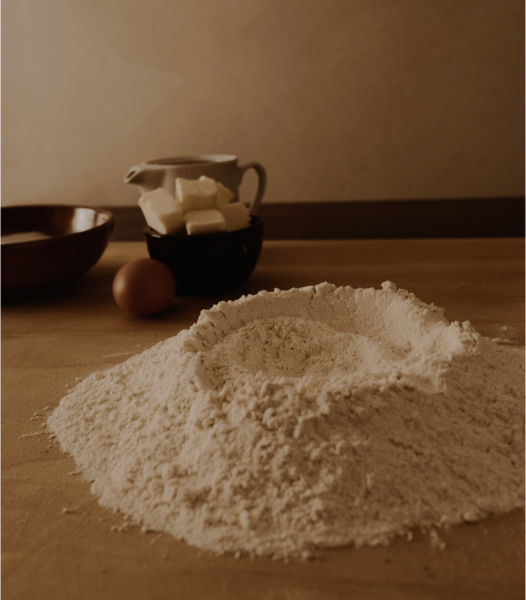
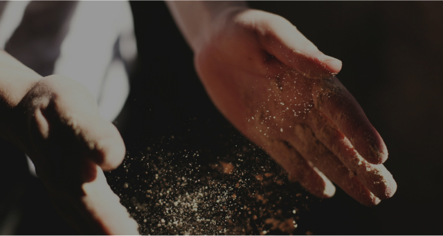

본문콘텐츠영역
뚜레쥬르 소개
매일매일(Tous Les Jours),
매장에서 직접 굽는 베이커리
- 뚜레쥬르(Tous Les Jours)는 프랑스어로 ‘매일매일’이라는 뜻으로 매장에서 직접 굽는 신선함을 가장 큰 가치로 하는 베이커리입니다
- 오븐에서 방금 꺼낸 빵이 가장 맛있다는 것을 알기에, 뚜레쥬르는 지금도 더욱 따뜻하고 촉촉한 갓 구운 빵을 제공하기 위해 끊임없이 노력합니다. 매장에서 직접 굽는 것에 그치지 않고, 언제라도 따끈한 빵을 만날 수 있게 더욱 자주 굽고, 고객들이 필요한 시간에 맞춰 굽는 등 세심하고 배려가 담긴 서비스도 준비하고 있습니다. 갓 구워낸 빵은 고소한 향기와 따스한 온기로 매장을 가득 채우고, 고객들에게는 가장 맛있는 빵을 맛보는 행복을 선물합니다.
- 자연의 기운을 담은
순수한 재료 사용 - 빵에 가장 많이 쓰이는 우유와 치즈를 유기농 우유, 자연치즈로 바꿔보기도 하고, 각 지역의 싱싱한 제철 식재와 과일 등 자연의 기운을 담은 순수한 재료를 사용하는 등 항상 좋은 재료가 기본이 되는 건강하고 정직한 빵과 케이크를 만들고자 노력 합니다. 뚜레쥬르의 빵과 케이크는 들어가는 모든 재료를 하나 하나 꼼꼼히 선별해서 사용합니다.

- 60년 노하우가
축적된 밀가루 - 뚜레쥬르와 CJ제일제당은 오랜 노력 끝에 베이커리 전용 맞춤 밀가루, ‘온리원(OnlyOne)’을 개발하여, 개성있는 최적의 빵 맛을 구현하고자 하였습니다. 식빵은 더욱 부드럽고 촉촉하게, 페이스트리 류는 더욱 가볍고 바삭하게. 다양한 맞춤 밀가루는 빵마다의 개성 있는 식감을 살려주고 장시간 동안 그 부드러움이 유지될 수 있도록 합니다.
- 매일매일, 하루 3번
매장에서 직접 빵을 굽는 일 - 다른 베이커리에서 쉽게 도전하지 못했던 혁신적인 시도로 베이커리 시장에 첫 발을 내딛었습니다. 그 동안 뚜레쥬르는 혁신적인 운영방식 뿐 아니라 베이커리 전용 맞춤 밀가루를 개발하는 등 최고의 맛을 향한 열정과 베이커리 시장선도의 사명을 가지고 진화해왔습니다. 앞으로도 고객과 감동시키는 새롭고 혁신적인 변화를 위해 끊임없이 노력하겠습니다.

본질을 지키는 것은 기본,
더 나아가 혁신적인 변화로 업계를 선도합니다